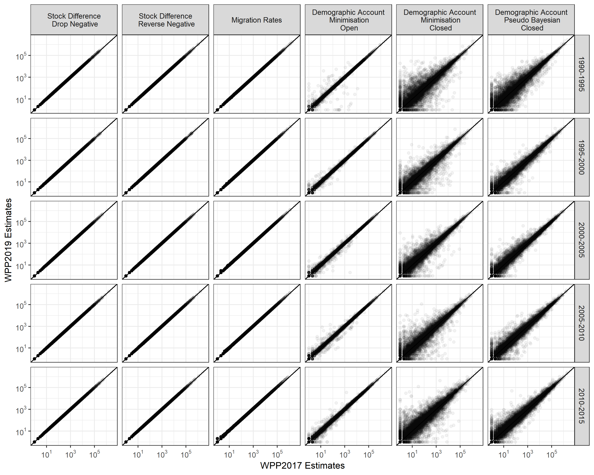
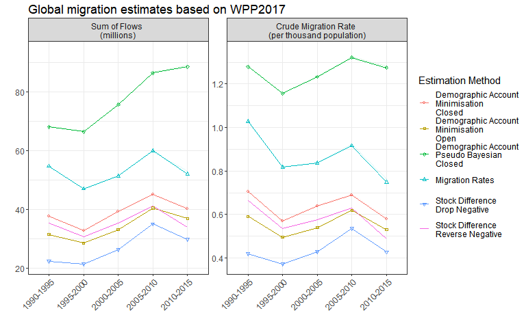
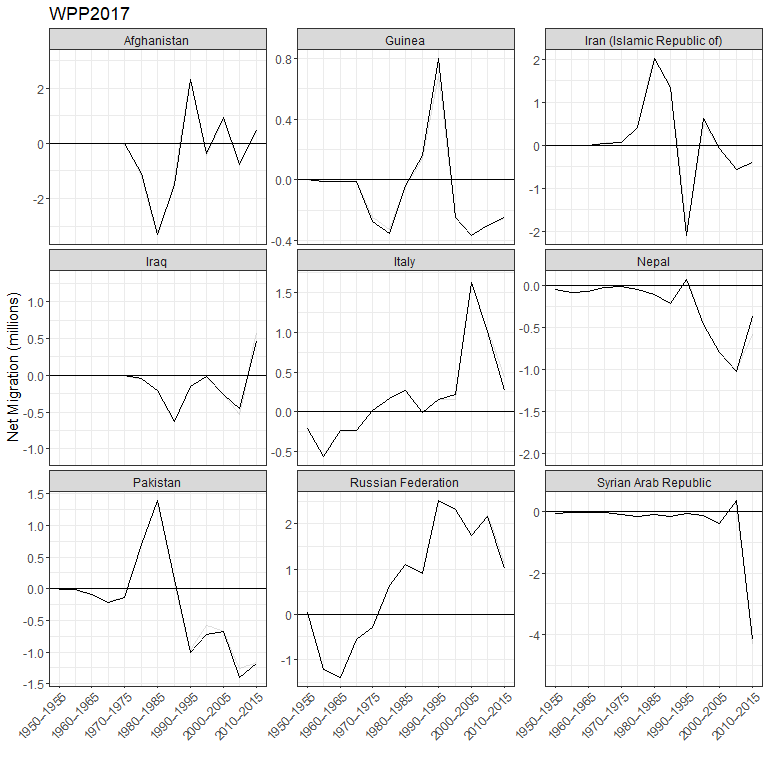
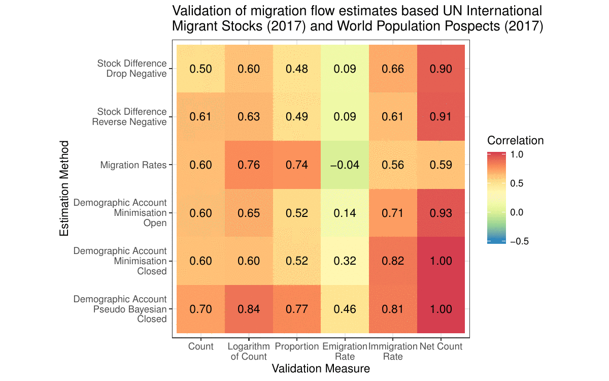
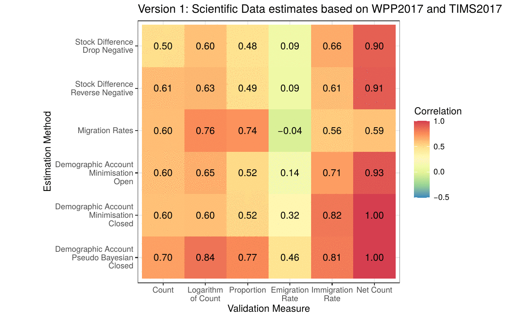
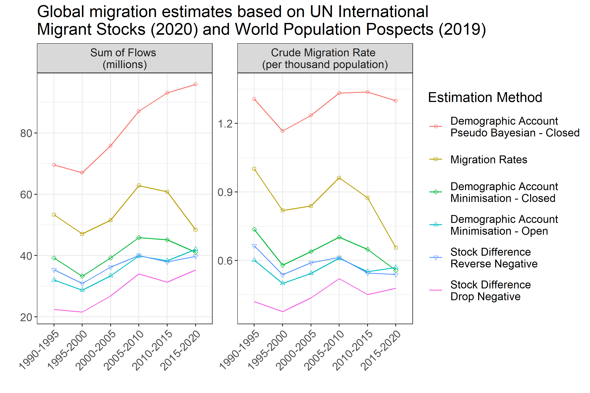
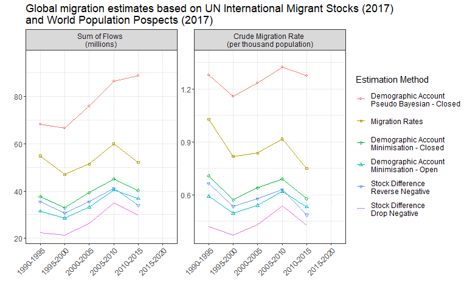

Since the paper was published I have produced four updates to reflect
The latest United Nations demographic data released in WPP2019 (July 19, 2019)
The latest United Nations migrant stock data released in IMS2019 and IMS2020 (October 23, 2019 and February 1, 2021)
Corrections for Serbia, Montenegro, Sudan and South Sudan in earlier periods (August 3, 2020)
See the table of contents above to jump to a short discussion on each update. The different versions of estimates are all available on Figshare
Version 2: Update for WPP2019
This paper came out a day before the United Nations Population Division updated their World Population Prospects (WPP). As all the estimates were based on WPP2017 our claim for the estimates being based on the most up to date input data was only true for around 24 hours.
In order to keep the estimates a bit more current I have added new version based on the WPP2019 to the Figshare collection. Below is a quick summary of the changes in the updated estimates to those in the paper.
Comparison of estimates based on WPP2017 and WPP2019
The plot below shows the relationship between the bilateral flow estimates based on WPP2017 and WPP2019 from each period and estimation method.

For the stock differencing methods there are no changes in the estimates. They do not rely on WPP data. The migration rates approach uses the total absolute net migration data from WPP. All bilateral flows from WPP2019 are slightly higher than their WPP2017 counterparts, though it is barely noticeable in the plot above. The demographic accounting methods use the birth, death and population estimates from the WPP. In each method there are some sizable differences for the flows generated by updated revisions to the WPP demographic data, in particular for those based on the closed demographic accounting approach.
These difference results in revisions to the overall totals of migration flows. Below is an animation of the changes to Figure 2 in the paper

From this plot it is easier to see the changes in the migration rates estimation method. I was surprised that the changes in the estimates were occurring in all periods, not just the most recent period (2010-2015). To investigate I took a look at the changes in the WPP data.
Which countries are most affected?
The countries where the largest changes in the bilateral estimates occurred (from the closed demographic accounting methods) can be detected by looking at the revisions in net migration between WPP2017 and WPP2019. Net migration is the best measure to track their changes as it correlates perfectly with the net migration in the WPP and is the residual of the input data (births, deaths and population) for the estimates based on the demographic accounting methods. Below are the changes in the complete time series of net migration in nine countries where the largest absolute differences (in any period) between the two WPP versions occur.

At first I was a bit surprised by the scale of the changes. In some periods the revisions to net migration are greater than a million. I dug a little deeper into net migration in previous WPP revisions to find that similar revisions are not unusual. Below are the revisions of absolute net migration between past WPP versions that exceed one million (back to WPP2000, the earliest WPP data I can get my hands on).
Impact on validation exercise
The impact of the revision in WPP data on the validation exercise in the paper is minimal. Below is an update of Figure 4 in the paper.
The correlations change by few hundredths of a decimal. These small changes, despite what is shown in the first plot above, are due to the limited amount of reported migration flows statistics (at the global level) to carry out our validation exercise. In the 45 countries that we used (based on the United Nations Population Division collection) the revisions in the WPP data were relatively minor, hence only small changes in their estimates and the correlations with the reported data.
Version 3: Update for IMS2019
Another update in the input data came out a few weeks back - this time the UN International Migrant Stock (IMS) data. I have added another set of flow estimates based on the IMS2019 and WPP2019 to the Figshare collection (the original flow estimates in the paper were based on IMS2017). I do not expect there will not be a need to update the estimates again until at least 2021.
Below are a few plots to give some visual summaries of the changes in the updated estimates to those in the paper and from the last update.
Comparison of estimates
The plot below shows the relationship between the bilateral flow estimates based on IMS2017 and WPP2017 (as in the paper) and IMS2019 - WPP2019 (this update) from each period and estimation method.
In all methods (columns) there are changes some the estimates, which tend to be larger in more recent periods (lower rows) and estimation methods based on demographic accounting (columns to the right). These patterns are likely due to larger revisions in the most recent stock data and the use of updated demographic data in the demographic accounting methods - not required in the stock differencing approaches.
The revisions to the overall totals of migration flows, shown in Figure 2 in the paper, are animated below, transitioning from 1) the estimates in the paper to 2) the first update of the estimates from changes in the demographic data to 3) the most recent update for changes in the stock data.
The 2010-2015 estimates are, on the whole, suggesting that the total global flows remained at similar levels to 2005-2010. Earlier versions of the estimates had suggested a decline. As a result the crude global migration rate falls by only a small margin for most estimation methods during 2010-2015, except for Pseudo-Bayesian estimates of flows where the rate increases a touch.
Which countries are most affected?
The largest changes in the bilateral flow estimates can be partially detected by looking at the revisions in migrant stock data between IMS2017 and IMS2019. In the stock differencing methods these changes are directly related to the change in the estimated flow sizes between the bilateral country pair. In the demographic accounting approaches the impact of the revision is less direct on the estimated flows, as each method allows for return and on-wards migration to match changes in migrant stock data. Below is scatter plot of the changes in the IMS data by continent.
There are a few features to note. First, and unsurprisingly, the largest revisions are occurring in the most recent data (2015). Second, the biggest changes are in North American data sources. Below is a table of the bilateral pairs where the revision to the migrant stocks are greater than 100,000. Third, in some areas there are noticeable patterns to the changes - the diagonal lines parallel to the \(y=x\) line - which I guess is related to updates in the data used to imputation missing bilateral stocks.
Impact on validation exercise
The impact of the revision in stock data on the validation exercise in the paper is slightly larger than the previous update, but still not very dramatic. Below is an animated version of Figure 4 in the paper, showing the correlations between the flow estimates and reported data for various migration measures, for the original estimates and subsequent updates based on new WPP and IMS data.

As with the first update, the small changes in the correlations, despite some large revisions in the migrant stock data are due to the limited amount of reported migration flows statistics (at the global level) to carry out our validation exercise.
Version 4: Correct for Serbia, Montenegro, Sudan and South Sudan before 2005
In the original paper, and updates described above, both Serbia and Montenegro, and Sudan and South Sudan are treated as separate countries through the entire 1990 to 2015 period. This was not a great choice. Although the UN provide separate demographic and migrant stock data for each of the four countries back to 1990, the notes in the migrant stock speadsheet (number 4 and 24) point out that the foreign born data for Sudan and Serbia before 2005 cover South Sudan and Montenegro respectively. In both South Sudan and Montenegro before 2005 there is no data provided for the foreign born populations.
The differences in geographic coverge of Sudan and Serbia in the migrant stock data has an impact on the flow estimates that are based on the differences in stocks. For example, the demographic accounting based methods were trying to calibrate changes in foreign born stocks (from zero in 1990 to zero in 1995 for example) in South Sudan and Montenegro with a non-zero net migration over the period. This was resolved in the background by some parts of the IPF code running until their default iteration limit rather than until convergence, where convergence was not feasible. I picked up on this when adding some new warning messages in the ffs_demo() function of the migest package which should now alert users for non-convergence.
To rectify this problem I have created a new version of the estimates that treat Serbia and Montenegro, and Sudan and South Sudan, as single countries before 2010-2015. This reduces the number of countries in the earlier periods of the data to 198, there is still 200 countries, and the estimates are the same as in the previous update. I use the SCG and SUD country codes for Serbia and Montenegro and Sudan before 2010-2015, and the four separate country codes during 2010-2015 and after (SRB, MNE, SDN, SSD as in previous versions).
I have added a few plots below to once again give some summaries of the changes in the updated estimates to those in the paper and from the last update.
Comparison of estimates
The plot below shows the relationship between the bilateral flow estimates based on the last update based on IMS2019 and WPP2019 and the newer estimates with the correction for the four countries.
Impact on validation exercise
The impact of the correction for the four countries on the validation exercise is very minor. Below is an animated version of Figure 4 in the paper, showing the correlations between the flow estimates and reported data for various migration measures, for the original estimates, the previous updates based on new WPP and IMS data and the new estimates with a correction for the four countries prior to 2010-2015.

Version 5: Update for IMS2020
The new UN International Migrant Stock (IMS) data came out a few weeks back. I have added another set of flow estimates based on the IMS2020 and WPP2019 to the Figshare collection (the original flow estimates in the paper were based on IMS2017). As the IMS2020 contain bilateral stocks for 2020, it was possible to generate a first set of flow estimates for the 2015-2020 period, seen the animation below for one of the methods covered in the paper:
Below are a few plots to give some visual summaries of the changes in the estimates compared to previous versions.
Comparison of estimates
The plot of the totals migration flows, shown in Figure 2 in the paper, is updated below with the new estimates, including the new values for the 2015-2020.

The estimates in the new 2015-2020 period see a continued slow in the growth of total flows based on estimates using the Pseudo-Bayesian method. The other demographic accounting methods also see a small increase in the estimated total flows during 2015-2020 from 2010-2015. There is a noticeable decline in the total flows during 2015-2020 estimated using the rates approach and incline from the stock differencing methods. I suspect all the estimates for 2015-2020 will see some major changes from future revisions of the IMS data, as data drips in from the 2020 round of censuses that will alter the stocks and demographic used as input data to estimate flows in the most recent periods.
The evolution of the changes in the estimates from different revisions in the input data can be seen below; transitioning from 1) the estimates in the paper to 2) the first update (version 2) of the estimates from changes in the demographic data to 3) the second update for changes in the stock data (version 4) to the most recent update (version 5, the same as the plot above).

Impact on validation exercise
The impact of the revision in stock data on the validation exercise in the paper is still relatively minor. Below is an update of the animated version of Figure 4 in the paper, showing the correlations between the flow estimates and reported data for various migration measures, for the original estimates and subsequent updates based on new WPP and IMS data.
As with the other updates, the small changes in the correlations, despite some large revisions in the migrant stock data are due to the limited amount of reported migration flows statistics (at the global level) to carry out our validation exercise. The estimates during 2015-2020 have no influence due to the lack of corresponding reported flow data in the UN collection.